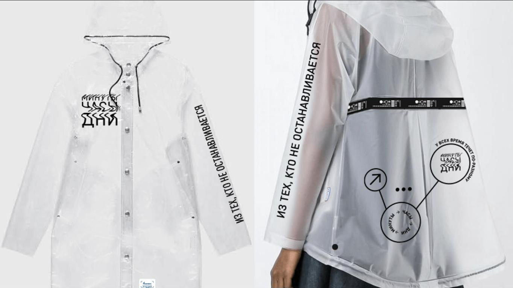
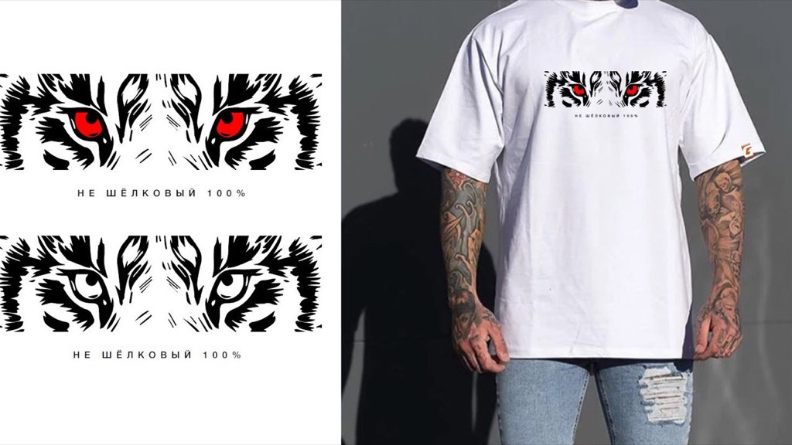

паттерн, а не логотип на груди
- клиент
- G-Drive
- год
- 2022
- отрасль
- топливо
- формат
- дизайн мерча для ралли «Шёлковый путь»
задача
мерч для гонки должен быть брутальным и без излишеств
идея
фирменный паттерн, цвета и своя графика вместо логотипа на груди — капсула, которую носят и после финиша



результат
—носят и после финиша